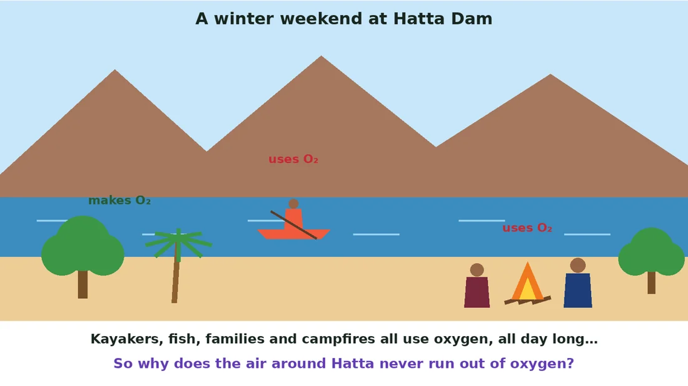
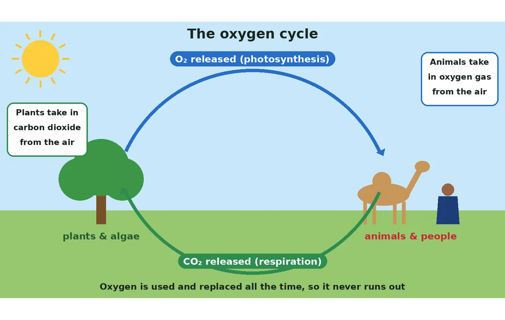
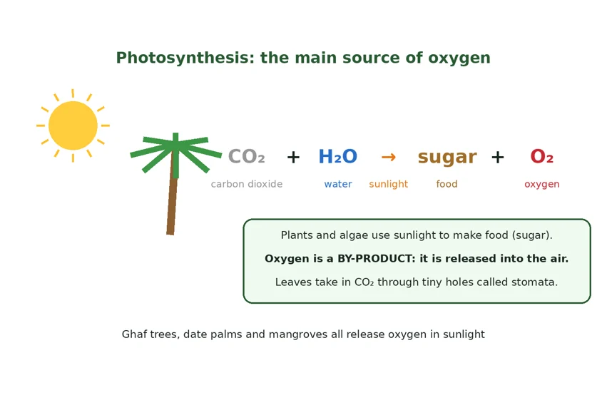
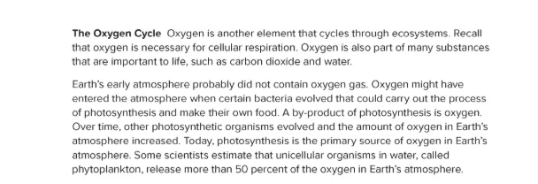
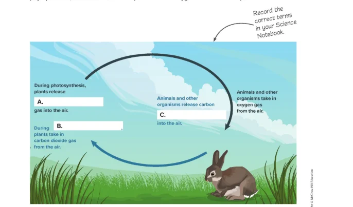
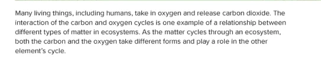
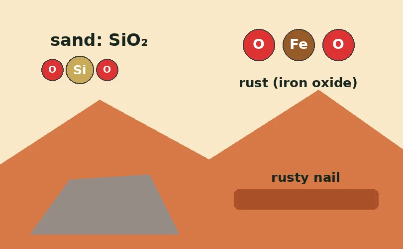
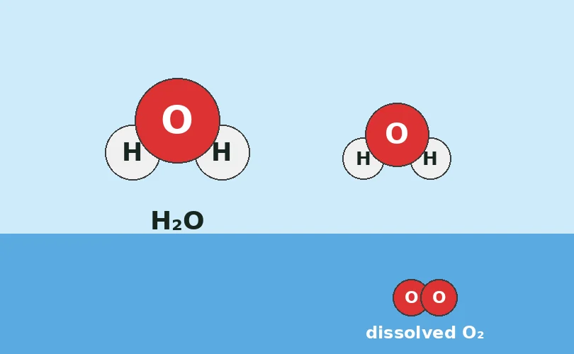
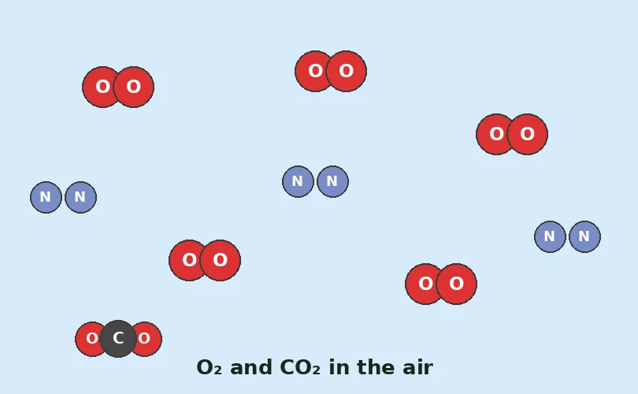
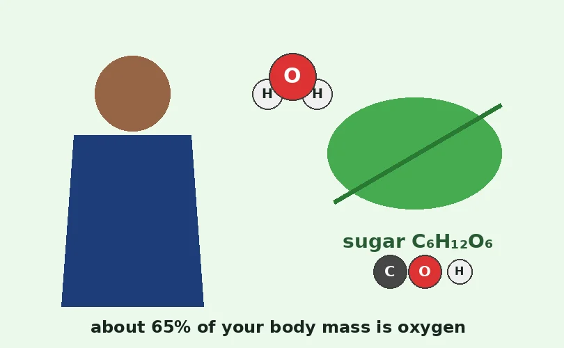

The Oxygen Cycle
Lesson 3 · Cycling of Matter
 UAE NATIONAL CHARTER · الميثاق الوطني
UAE NATIONAL CHARTER · الميثاق الوطنيMeet your UAE Values Team
Five friends will coach you through today's oxygen mission. Tap a character to discover their job today!
Lesson map · 45 minutes · tap any activity
Objectives, success criteria & key words
Describe how oxygen moves through an ecosystem.
- I can explain that photosynthesis is the main source of oxygen in the atmosphere.
- I can describe how living things use oxygen in cellular respiration and release carbon dioxide.
- I can draw the oxygen cycle, showing how oxygen moves between plants, animals and the air.
- I can explain how the oxygen cycle and the carbon cycle are linked.
Kickoff: starter + attendance

- Say “present” and settle in your seat.
- Think: hold your breath for 5 seconds. What does your body need from the air?
- Answer the 5 true/false questions on the next slide on your own: no peeking at a friend's answer!
Pre-assessment: what do you know?
Hook: the Hatta air mystery

A winter weekend at Hatta Dam…
Shamma kayaks hard across the dam while her family lights a campfire on the shore. She stops, out of breath, and has a question.
“We are all using oxygen: me, the fish, the fire, every visitor. Why doesn't it run out?”
Thousands of living things use oxygen every second. So where does new oxygen come from?

Watch: the oxygen cycle (2.5 min)
Encounter: uses or makes oxygen?
Tap each example: does it mainly use or make oxygen? Tap again to change.

Advanced fact: plants respire too, but in sunlight they make much more oxygen than they use.
The great gas swap (the unconventional version)
Think of the oxygen cycle as a gas swap. Like friends swapping cards in the majlis: plants hand oxygen to animals, and animals hand carbon dioxide back. Nothing runs out!
During photosynthesis, plants and algae release oxygen into the air; respiration uses it again.
Textbook: the oxygen cycle

Textbook: complete the cycle diagram

Textbook: the carbon and oxygen cycles are linked

Follow the oxygen: the cycle in action
Oxygen in water: day and night
Fish and other water animals use dissolved oxygen: oxygen gas mixed into the water from water plants and algae and from the air at the surface.
Wind, rain and splashing mix more air into water. Think of the kayakers at Hatta Dam stirring up the water.
Oxygen detective: where is oxygen hiding?
Oxygen is not only in the air. It is part of rocks, water and living things too. Spot the red O atoms in each picture, then tap Reveal.
In rocks

In water

In air

In living things

Pondweed lab: oxygen bubbles
- Put the pondweed in the water, cut end up. Place the lamp 30 cm away.
- Timer: let it settle for 2 minutes, then time 1 minute exactly.
- Counter: count the bubbles rising from the cut end of the stem.
- Repeat with the lamp far then close (10 cm). Record below.
| Lamp | Bubbles per minute | What it shows |
|---|---|---|
| Far (30 cm) | Few (e.g. 5) | Less light: less photosynthesis, less O₂ |
| Close (10 cm) | Many (e.g. 20) | More light: more photosynthesis, more O₂ |
Pause and check
Formative check: tap an answer. Wrong? Read the hint and try again!
Put the oxygen cycle in order
Say the order with your partner, then tap the events from first to last. Tap a numbered event to undo.
Oxygen cycle worksheet (1/2)
B. The layer of gases around Earth
C. Plants use sunlight to make food and release O₂
D. Burning: uses O₂ and releases CO₂
E. Tiny living things in water that make O₂
Oxygen cycle worksheet (2/2)
| Example | Takes in | Gives out |
|---|---|---|
| A date palm in the sunlight | ||
| A student running in PE | ||
| A campfire at Hatta |
Why does Hatta's air never run out of oxygen? Use photosynthesis, respiration and cycle.
✓ People, animals and fires use oxygen in respiration and burning, giving out CO₂.
✓ Plants and algae take in that CO₂ and, in photosynthesis, release new oxygen.
✓ Oxygen moves in a cycle, so it is used and replaced all the time.
Green, orange or purple? Choose your level
Green · Support
- Complete: “Plants release ____ in photosynthesis.”
- Circle: animals breathe out oxygen / carbon dioxide.
- True or false: our cells need oxygen for respiration.
- Which makes oxygen: a ghaf tree or a camel?
1. oxygen
2. carbon dioxide
3. True
4. a ghaf tree
Orange · At level
- Draw the oxygen cycle with a plant and an animal. Label the O₂ and CO₂ arrows.
- Textbook diagram: what are the missing terms A, B and C?
- Why do fish in Hatta Dam need water plants and algae?
1. Plant → O₂ arrow → animal; animal → CO₂ arrow → plant, making a circle.
2. A: oxygen · B: photosynthesis · C: dioxide (carbon dioxide).
3. They release oxygen into the water by photosynthesis; fish take in this dissolved oxygen for respiration.
Purple · Challenge
- Earth's early atmosphere had no oxygen gas. Explain how oxygen got into the air.
- Explain how the oxygen cycle and the carbon cycle are linked.
- Design a test: does more light make pondweed give out more oxygen? Change? Keep? Measure?
1. Bacteria that could photosynthesise evolved and released O₂ as a by-product; over time plants and algae added more.
2. Photosynthesis takes in CO₂ and gives out O₂; respiration does the opposite. The same atoms move through both cycles.
3. Change: lamp distance. Keep: pondweed, water, temperature, time. Measure: bubbles per minute, 3 times each.
Summative: Oxygen Master quiz
Mystery solved!
People, animals, fish and campfires use oxygen and give out carbon dioxide through RESPIRATION and burning. But trees, date palms and the algae in Hatta Dam take in that carbon dioxide and, through PHOTOSYNTHESIS, release new oxygen. Oxygen moves round and round in a CYCLE, so it is used and replaced all the time!
I can explain that photosynthesis is the main source of oxygen in the atmosphere.
I can describe how living things use oxygen in cellular respiration and release carbon dioxide.
I can draw the oxygen cycle, showing how oxygen moves between plants, animals and the air.
I can explain how the oxygen cycle and the carbon cycle are linked.
Which value did you show today?
Tap the character whose value you showed in this lesson. Then tell your partner one real example!
Breathe in, shine out
Like the oxygen cycle, kindness goes round and round: what you give comes back. Keep giving!